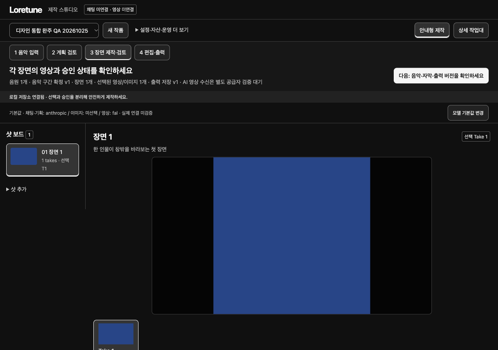
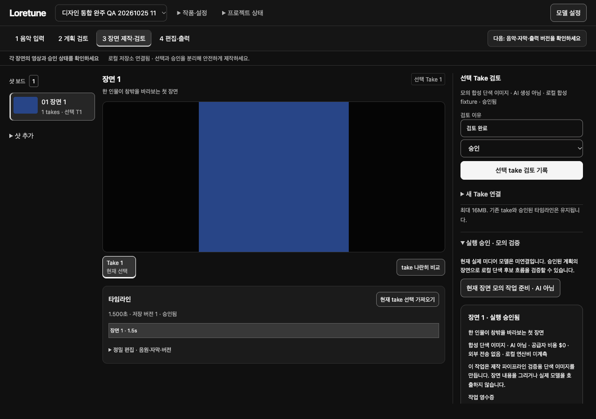
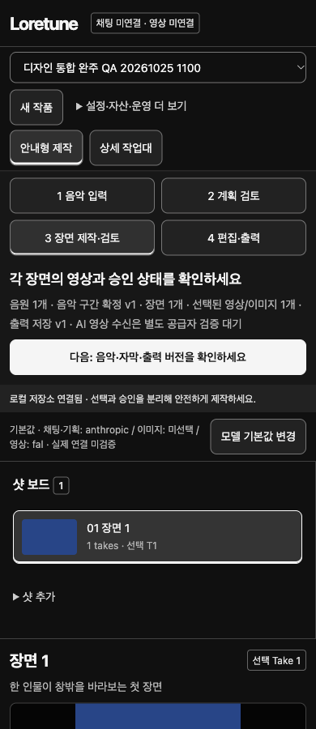
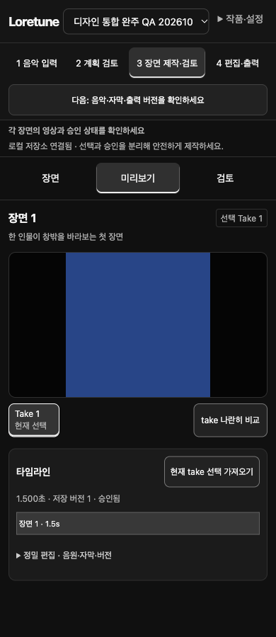
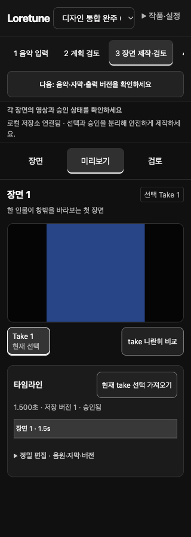
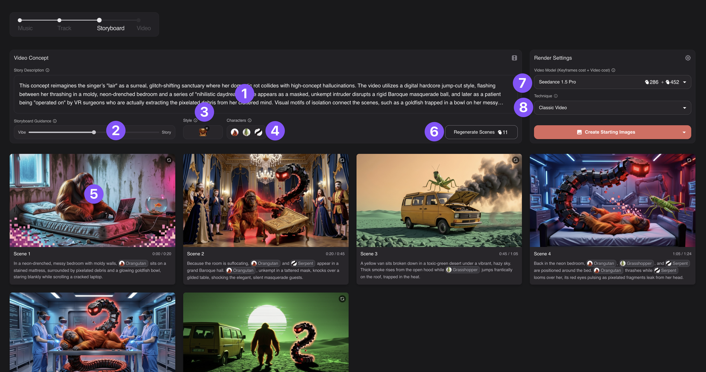
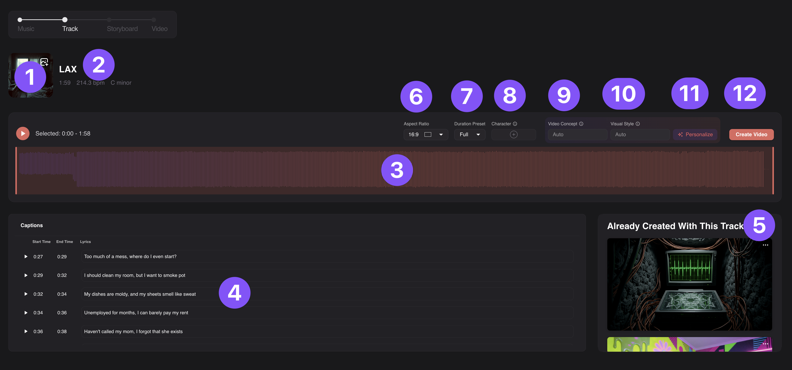

Loretune 작업대 · 전후 비교
실제 통합 앱의 기존 화면과 같은 fixture에 임시 적용한 구조 후보입니다. 후보는 아직 공용 앱에 통합되지 않았습니다. 생성·업로드·저장 없이 화면 배치만 바꿨습니다.
최신7426e5… 소스에 같은 fixture로 임시 적용한 12:17 UTC 후보입니다. ID 누락/중복0, 핵심 handler·프로젝트 데이터 불변, 모바일 키보드 panel 전환과 모델 Escape 복귀를 확인했습니다. 공용 앱 통합 후 전체 상태/제작 회귀는 남아 있습니다. 전체 보고서와 정확한 revision 경계
Desktop 작업대 시작317 → 141px
미리보기 하단808 → 542px
Take 검토 진입2437 → 346px
동일 1280×900 · 동일 합성 프로젝트
현재 통합 앱

HTML7426e5… / step3 / 단색 이미지 fixture. 실제 viewport1280×900.
구조 후보 · 임시 DOM/CSS

같은 페이지·데이터·viewport. compact shell, 검토 inspector, timeline dock. 앱 통합본 아님.
Mobile · 작업 영역을 선택해 집중
이전390×900

preview y867–1073.
후보390×900

preview y356–562, timeline 하단821. 장면/검토는 다른 panel.
후보320×900

preview y374–540, timeline 하단799. 단계 strip은 의도적 내부 가로 scroll.
Neural Frames · 공식 작업 화면 자료
인증된 영상 목록은 비어 있어 새 데이터 생성 없이 기존 editor를 열지 못했습니다. 아래는 공식 튜토리얼에 수록된 실제 제품 화면입니다. 현재 계정의 live editor가 아니며 원본 viewport/DPR는 미확인입니다. 화면의 보라색 번호는 튜토리얼 주석입니다.
Storyboard · 작업물과 실행 맥락

3210×1690 원본. 장면 이미지가 내용 중심, 우측 모델/비용/실행. 이미지 비율대로 표시,1280 실제 viewport 비교 아님.Loretune · 도메인에 맞춘 배치
같은 branding을 복제하지 않음. 장면 검토/온톨로지/실행 승인 구분을 유지.공식 Track 화면 보기

3194×1494 원본. waveform와 관련 설정을 한 작업 영역에 배치.수락할 변화와 아직 확인할 것
| 확인 | 통합 후 남음 |
|---|
| 상단176px 절감, media·review·timeline 동시 노출 | 모든 모델/계획/승인/출력 상태의 기능 회귀 |
| 1280/390/320 문서 가로 넘침0 | 실제200/400% 확대, keyboard-only 전체 흐름, screenreader |
| 동일 무채색 semantic palette 유지 | 실제 disabled 상태 전환, 긴 한국어/여러 장면 상태 |
45/100은 이전 화면에 대한 주관적 휴리스틱입니다. 이번 후보의 객관적 경쟁력 점수나 실제 사용자 시험 결과를 주장하지 않습니다. 단색 fixture 자체는 감점하지 않았습니다.
통합 patch · 독립 CSS · DOM 구조 후보 · 토큰·상태 계약